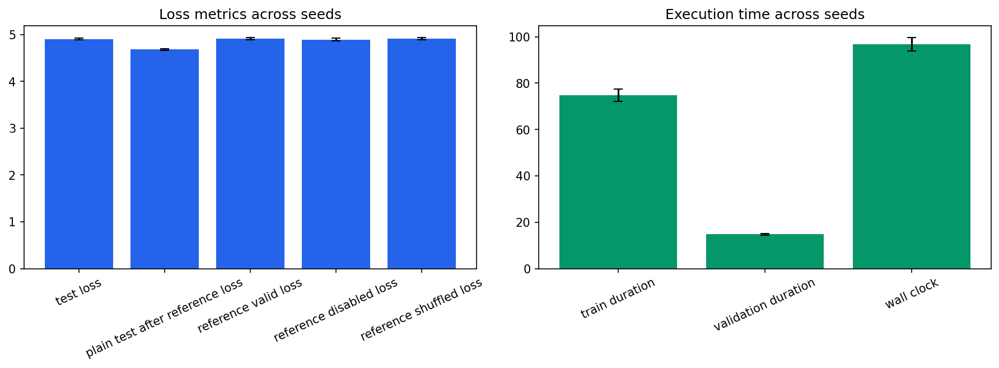

Seeds: [1, 7, 21, 42, 87]. Values are population mean +/- standard deviation.
| Test Loss | 4.90706 +/- 0.0215 |
|---|---|
| Test Perplexity | 135.272 +/- 2.91 |
| Plain Test After Reference Loss | 4.6809 +/- 0.0156 |
| Reference Valid Loss | 4.91286 +/- 0.0242 |
| Reference Disabled Loss | 4.89376 +/- 0.0279 |
| Reference Shuffled Loss | 4.91557 +/- 0.0243 |
| Train Duration Seconds | 74.8175 +/- 2.6 |
| Validation Duration Seconds | 14.8351 +/- 0.371 |
| Wall Clock Seconds | 96.7386 +/- 2.96 |
| Processed Tokens | 78610.8 +/- 78.4 |
